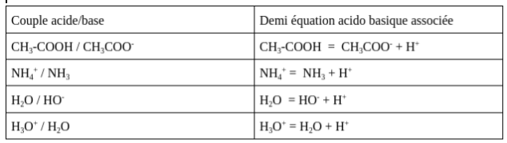
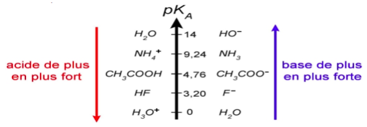
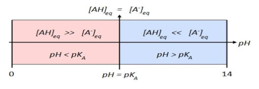
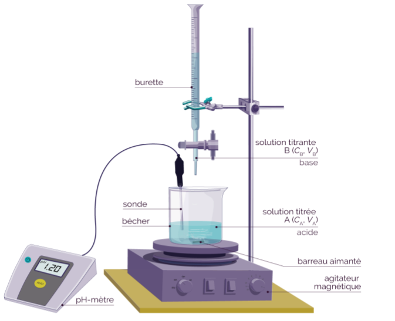
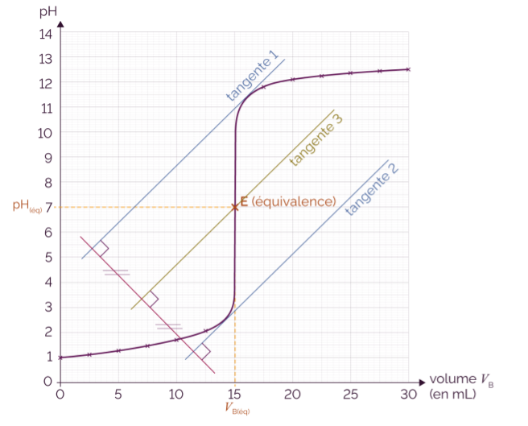

Selon la définition de Brønsted, un acide est une espèce chimique susceptible de perdre un ou plusieurs proton(s) (H+). Selon la transformation (AH est un acide):
\[AH \longrightarrow A^- + H ^+\]Toujours selon Brønsted, une base est une espèce chimique susceptible de capter un ou plusieurs protons. Selon la transformation (B est une base):
\[B + H^+ \longrightarrow BH ^+\]L'eau \(H_2O\) joue le rôle d'un acide au sein du couple acide-base \((H_2O/OH^-)\).
La molécule d'eau cède un proton \(H^+\) pour former sa base conjuguée, l'ion hydroxyde de forme \(OH^-\).
La demi-équation de réaction associée est donc :
\[H_2O \longleftrightarrow OH^- + H ^+\]L'eau étant acide, elle peut réagir avec \(B\):
\[B + H^+ \longleftrightarrow BH ^+\]Par conséquent, en assemblant les deux demi-équations de réactions, l'équation de réaction entre l'eau (en tant qu'acide) et cette base obtenue est :
\[B + H_2O \longleftrightarrow BH^+ + OH^-\]L'eau joue également le rôle d'une base au sein du couple acide-base \((H_3O^+/H_2O)\).
Dans ce cas, la molécule d'eau capte un proton \(H^+\) pour former son acide conjugué, l'ion oxonium de formule \(H_3O^+\).
\[H_2O \longleftrightarrow OH^- + H ^+\]L'eau étant une base, elle peut réagir avec un acide \(AH\) dont la demi-équation de réaction est :
\[AH \longleftrightarrow A^- + H ^+\]Par conséquent, en assemblant ces deux demi-équations de réaction, l'équation de réaction entre l'eau (en tant que base) et l'acide qui en résulte est :
\[H_2O + AH \longleftrightarrow H_3O^+ + A ^-\]Étant donné que, selon le couple acide-base considéré, l'eau peut jouer le rôle d'acide ou de base, on dit qu'elle est ampholyte.
À noter qu'il existe d'autres ampholytes, comme par exemple l'ion hydrogénocarbonate \(HCO_3^-\) qui joue le rôle d'un acide dans le couple \(HCO_3^-/CO_3^{2-}\) et le rôle d'une base dans le couple \(H_2CO_3/HCO_3^{-}\).
Ainsi, l'eau peut aussi bien jouer le rôle d'un acide que jouer le rôle d'une base. Comme les acides et les bases réagissent entre eux, l'eau peut donc réagir entre elle-même. Par conséquent, deux molécules d'eau vont pouvoir réagir ensemble, une des deux molécules réagissant en tant qu'acide et l'autre molécule d'eau réagissant en tant que base.
Cela donne les deux demi-équations de réaction suivantes :
\[H_2O \longleftrightarrow OH^- + H^+\] \[H_2O + H^+ \longleftrightarrow H_3O^+\]Et par conséquent, l'équation de réaction suivante est obtenue :
\[H_2O + H_2O \longleftrightarrow H_3O^+ + OH^-\]Soit
\[2H_2O \longleftrightarrow H_3O^+ + OH^-\]L'une des molécules d'eau va perdre un proton \(H^+\) et c'est l'autre molécule d'eau qui va capter ce proton \(H^+\), ce qui donne spontanément naissance à des ions hydroxyde et des ions oxonium : ce phénomène est appelé autoprotolyse de l'eau.
Le phénomène d'autoprotolyse implique que l'eau pure n'existe pas puisque les molécules d'eau sont toujours accompagnées d'ions oxonium et d'ions hydroxyde. En raison de la présence de ces ions, l'eau n'est jamais totalement isolante et a donc une conductivité non nulle. Cependant, compte tenu de la faible concentration de ces ions, la conductivité est également très faible.
L'équilibre qui existe entre l'eau et les ions produits par la réaction d'autoprotolyse de l'eau peut être caractérisé par la relation suivante :
\[Ke = [H_3O^+][OH^-] \text{ à } 25°C \text{, } Ke = 10^{-14}\] \[pKe = - \log {Ke} = 14\]Nous avons vu plus haut qu'une solution d'eau pure à 25°C est à pH = 7 et contient des ions oxonium et hydroxyde en concentrations égales : [H3O+] = [OH-]. On dit que la solution est neutre.
Toute solution pour laquelle \( [H_3O^+] > [OH^-] \) est acide.
Toute solution pour laquelle \( [OH^-] > [H_3O^+] \) est basique.
Si le pH d'une solution acide est faible, c'est parce qu'il libère des protons H+ selon l'équation :
\[AH \longrightarrow A^- + H^+\]donc la concentration des ions H+ augmente.
à l'opposé, si le pH d'une base est fort, c'est qu'elle capte les protons \( H^+ \), ce qui fait baisser leur concentration. Il y a donc une relation entre le pH et la concentration des protons.
Remarque : associés à l'eau, on note aussi les protons \( H^+ \) sous la forme d'ions oxonium \( H_3O^+ \).
Au lycée, on se limitera à l'étude des solutions diluées de mono-acides et de monobases qui ne mettront en jeu qu'un seul proton.
NB : une solution diluée est une solution dont la concentration est \( 10^{-5}\, molL^{-1} < C_{solution} < 10^{-1}\, molL^{-1} \). Le pH des solutions diluées est défini par l'expression simplifiée :
\[ pH = \log {[H_3O^+]} \hspace{1cm} \text{où} \hspace{1cm} [H_3O^+] = 10^{-pH} \]Attention : le pH est un nombre sans dimension (pas d'unité).
Pour nos explications, on considérera des monoacides : un seul \( H^+ \) est mis en jeu.
Pour un acide fort \( AH \), la transformation \( AH \rightarrow A^- + H^+ \) est totale dans une solution aqueuse. Cela veut dire que sa réaction avec l'eau est totale : . Donc, si on dissout \( n \) moles d'un acide fort dans l'eau, alors il va se former \( n \) moles d' \( H_3O^+ \) qui vont se combiner avec l'eau pour former \( n \) moles d'ions oxonium.
Estimation du pH : soit \( c \) (en mol/L) la concentration d'un acide fort dissous dans l'eau. On a :
\[ [H_3O^+] = c \] Comme le pH est donné par \[ pH = -\log ([H_3O^+]) \] il vient : \[ pH = -\log c \]Exemples d'acides forts : acides chlorhydrique \( HCl \), l'acide sulfurique \( H_2SO_4 \) et l'acide nitrique \( HNO_3 \).
Pour un acide faible \( AH \), la réaction avec l'eau est limitée :
\[ AH + H_2O \leftrightarrow A^- + H_3O^+ \]Cela veut dire que la forme basique est susceptible de réagir à nouveau avec l'eau pour redonner la forme acide de départ, selon la réaction inverse :
\[ AH + H_2O \leftarrow A^- + H_3O^+ \] C'est pour cela que l'on utilise la notation \( \leftrightarrow \).Les deux réactions sont en compétition et vont progressivement mener à un état d'équilibre chimique intermédiaire entre « tout l'acide a réagi » et « l'acide n'a pas réagi ». Si on dissout \( n \) moles d'un acide faible dans l'eau, on aura production de \( n' \) moles de \( [H_3O^+] \), avec \( 0 < n' < n \).
Exemples d'acides faibles : les acides carboxyliques (fonction ), l'acide fluorhydrique \( HF \).
Toujours selon Brønsted, une base est une espèce chimique susceptible de capter un ou plusieurs protons. Dans la pratique, ces protons peuvent être pris à des molécules d'eau, formant alors des ions hydroxydes. On prendra en compte ici uniquement des monobases.
Pour une base forte \( A^- \), sa réaction avec l'eau est totale :
\[ A^- + H_2O \rightarrow AH + OH^- \]Si on dissout \( n \) moles d'une base forte dans l'eau, il y aura production de \( n \) moles de \( [OH^-] \).
Estimation du pH : soit \( c \) (en mol/L) la concentration d'une base forte dissoute dans l'eau. On a :
\[ [OH^-] = c \] \[ K_e = [H_3O^+][OH^-] = 10^{-14} \] En conséquence, \[ [H_3O^+] = \frac {Ke}{[OH^-]} \hspace{1cm} \text{et comme} \hspace{1cm} pH = - \log ([H_3O^+]) \] \[ \text{on en déduit} \hspace{1cm} pH = 14 + \log c \]Exemple de bases fortes : hydroxyde de sodium (soude) \( NaOH \), hydroxyde de potassium (potasse) \( KOH \).
Pour une base faible \( A^- \), sa réaction avec l'eau est limitée :
\[ A^- + H_2O \leftrightarrow AH + HO^- \]Si on dissout \( n \) moles d'une base faible dans l'eau, il y aura production de \( n' \) moles d' \( [OH^-] \), avec \( 0 < n' < n \).
Exemple de bases faibles : les ions carboxylates (fonction -COO\(^-\)), c'est-à-dire les bases conjuguées des acides carboxyliques.
Lors d'une transformation, aucune matière n'est perdue et aucune matière n'est créée; la matière est transformée de son état initial vers un état final.
«Rien ne se perd, rien ne se crée, tout se transforme»
\[C = [AH] + [A^-]\]C: concentration totale. \([AH]\): concentration du forme restante. \([A^-]\): concentration du forme ionisée.
Toute solution aqueuse ionique est électriquement neutre. Le nombre de charges élémentaires positives est donc égal au nombre de charges élémentaires négatives Dans toute solution:
Nombre de charges élémentaires positives = nombre de charges élémentaires négatives
\[ \Sigma [X^-] = \Sigma [X^+]\]Exemples
1) Solution aqueuse de chlorure de sodium
Cette solution renferme les ions Na+ et Cl- provenant de la dissociation du sel et les ions H3O+ et OH- provenant de l'autoprotolyse de l'eau.
Condition d'électroneutralité:
\[ [Na^+] + [H_3O^+] = [Cl^-]+[OH^-]\]2) Solution aqueuse de bromure de calcium
Cette solution renferme les ions Ca2+ et Br- provenant de la dissociation du sel et les ions H3O+ et OH- provenant de l'autoprotolyse de l'eau:
Condition d'électroneutralité:
\[ [Ca^+] + [H_3O^+] = [Br^-]+[OH^-]\]Lorsqu'un système chimique est le siège d'une transformation chimique, celui-ci évolue entre un état initial (quantités de matière des réactifs et des produits introduits au début de la réaction) et un état final (quantités de matière des réactifs qui n'ont pas totalement réagi et celles des produits qui ont été formés).
En fonction de la composition de l'état final, on distingue les réactions totales des réactions non totales.
Une réaction est totale si à la fin de la réaction au moins un des deux réactifs est complètement consommé : il s'agit du réactif limitant.
Une réaction est non totale si tous les réactifs et les produits sont présents à la fin de la réaction. L'état final est un état d'équilibre.
L'avancement maximal correspond à ce qu'on obtiendrait si la réaction était totale, il tient compte du réactif limitant. L'avancement final correspond à ce que l'on va réellement obtenir si la réaction n'est pas totale.
La comparaison de l'avancement maximal \(x_{max}\) et de l'avancement final \(x_f\) permet de déterminer si la réaction est totale ou non totale.
Les avancements sont exprimés en mole et sont déterminés grâce au tableau d'avancement.
Le taux d'avancement final (ou coefficient d'ionisation) , noté \(\tau\), est égal au rapport de l'avancement final sur l'avancement maximal.
\[ \tau = \frac{X_f}{X_{max}} \]On peut alors définir un critère pour évaluer si une réaction est totale ou non totale.
Le taux d'avancement final est compris entre 0 et 1 (car \(x_{max}\) est toujours supérieur ou égal à \(x_f\)), on peut donc également exprimer sa valeur en pourcentage (1 = 100 % ; 0,5 = 50 % ; 0 = 0 %).
Remarque: Dans les acides bases on parle de coefficient d'ionisation au lieu de taux d'avancement :
\[ \alpha = \frac{forme\space ionisé}{concentration\space initiale} \]Le principe de Le Chatelier permet de prédire, de façon qualitative, le sens de la réaction (directe ou inverse) qui sera favorisée lorsque les conditions d'un système à l'équilibre sont modifiées.
L'état d'équilibre suppose que les réactions directes et inverses se déroulent à la même vitesse. Toutefois, cet équilibre est fragile. Si les conditions expérimentales dans lesquelles se déroule la réaction chimique sont perturbées, l'équilibre sera brisé et le système s'ajuste pour obtenir un nouvel état d'équilibre. Le principe de Le Chatelier permet de prédire, qualitativement, dans quel sens un système en équilibre évoluera si ses conditions expérimentales sont modifiées.
Le principe de Le Chatelier stipule que:
«Si on tend à modifier les conditions d'un système en équilibre, il réagit de façon à s'opposer partiellement aux changements qu'on lui impose jusqu'à l'établissement d'un nouvel état d'équilibre.»
L'ajout d'un catalyseur n'influence pas l'équilibre chimique.
L'acide ammonium peut libérer un proton selon la demi-équation suivante:
\[NH_4^+ \rightarrow NH_3 + H^+\]La base ammoniac peut capter un proton selon la demi-équation suivante:
\[NH_3 + H^+ \rightarrow NH_4^+\]Ces deux demi-équations sont inverses l'une de l'autre; on peut écrire:
\[NH_4^+ \leftrightarrow NH_3 + H^+\]Pour passer de l'espace acide \(NH_4^+\) à l'espèce basique \(NH_3\), il y a eu échange (ou transfert) d'un proton \(H^+\): on dit que \(NH_4^+/NH_4\) forme un couple acide/base.
Un couple acide/base, noté \(AH/A^-\), est l'ensemble d'une espèce acide et d'une espèce basique entre lesquelles a lieu un transfert de proton pour passer de l'une à l'autre.
Un tel couple est caractérisé par la demi-équation acido-basique:
\[AH + H_2O \leftrightarrow A^- + H_3O^+\]Example:
Un acide \(A_1H\) d'un couple (noté couple (1)) peut, dans certaines conditions, réagir avec la base \(A_2^-\) d'un couple (2). Lors de cette réaction, un échange de proton entre \(A_1H\) et \(A_2^-\) selon l'équation chimique:
\[A_1H + A_2^- \leftrightarrow A_1^- + A_2H\]Au cours d'une réaction acido-basique, il y a un transfert de proton d'un couple vers un autre.
Example:
Lorsqu'on mélange l'acide benzoïque \(C_2H_5COOH\) et de la soude (Na⁺, OH⁻) a lieu une réaction acido-basique entre l'acide benzoïque et l'ion hydroxyde:
La réaction bilan:
\[C_2H_5COOH + OH^-\leftrightarrow C_2H_5COO^- + H_2O\]Définition : pour un couple acide-base \(AH/A^-\), on appelle constante d'acidité \(K_a\) la quantité:
\[ K_a = \frac {[A^-][H_3O^+]}{[AH]}\]Pour un couple donné, la constante d'acidité ne dépend que de la température. Celle-ci sera fixée à 25 °C. Concrètement, elle est indépendante des conditions initiales, c'est-à-dire de la concentration initiale en acide faible dissous, contrairement à .
Dans cette expression, les concentrations doivent obligatoirement être exprimées en mol/L et à l'équilibre chimique, d'où l'indice (eq). est sans dimension.
Définition : De la même manière que l'on définit le pH. On définit le pKa par : \[ pK_a = -\log K_a\]
échelle de pKa : Le Ka et par extension le pKa sont de bonnes « étiquettes » afin de cataloguer les couples acide/base. On construit alors une échelle de pKa:
Remarque: la notion de Ka (ou de pKa ) n'a pas de sens pour un acide fort ou une base forte. D'autre part, on parle de Ka pour un couple acide/base, et pas seulement pour l'acide.
À partir de l'expression du Ka, on établit la relation:
\[ pH = pKa + \log \frac {[A^-]}{[AH]}\]Diagramme de prédominance: en raisonnant par rapport à cette formule, on établit que:
Pour un couple donné, on a alors le diagramme de prédominance:
Connaissant le pH et le pKa, on peut donc indiquer quelle forme domine : AH ou A⁻.
Definition:
Une solution tampon est constituée d'un acide faible et de sa base conjuguée dans des concentrations assez proches. Le pH d'une solution tampon est donc voisin du pKa de ce couple. La solution tampon est résistante des petits changements du pH.
Un titrage (ou dosage) est une manipulation qui permet de déterminer la concentration d'une espèce en solution.
Un titrage avec suivi pH-métrique (ou titrage pH-métrique) a lieu au cours d'une réaction entre un acide et une base.
Une solution SA contenant un acide AH de concentration CA inconnue (solution titrée ).
Une solution SB contenant une base B de concentration CB connue (solution titrante).
Au cours de ce titrage, on étudie la variation de pH de la solution titrée acide au fur et à mesure que la solution de base titrante de concentration connue est versée. On va obtenir un saut de pH qui va nous permettre de retrouver indirectement la concentration en quantité de matière recherchée.
Remarque
On peut aussi déterminer la concentration d'une base par titrage pH-métrique. Pour titrer une base avec un acide, la base est dans la solution titrée et l'acide est la solution titrante.
a. Matériel et solutions utilisés
Matériel
Le titrage nécessite deux solutions : une titrée et une titrante.
solution titrée
La solution SA contient un acide AH de concentration en quantité de matière CA (en mol·L-1) : c'est la concentration du réactif titré A. La concentration CA est inconnue et on cherche à l'estimer.
Cette solution a pour volume VA (en L) : c'est le volume fixe de la solution titrée au début de la manipulation, qui se trouve dans le bécher.
solution titrante
La solution SB contient une base B de concentration en quantité de matière CB (en mol·L-1) : c'est la concentration de réactif titrant B. La concentration CB doit être connue avec précision.
Cette solution a pour volume VB (en L) : c'est le volume de réactif titrant qu'on va ajouter progressivement dans le bécher.
Pour réaliser un titrage avec suivi pH-métrique, il faut réaliser les étapes suivantes.
étape 1 – Réaliser le montage.
étape 2 – Remplir la burette.
On verse la solution titrante SB contenant la base dans la burette graduée.
étape 3 – Remplir le bécher.
Le volume VA de la solution titrante SA contenant l'acide doit être précis.
On le prélève à l'aide d'une pipette jaugée et d'un pipeteur. On l'introduit ensuite dans le bécher.
étape 4 – Réaliser le titrage.
On met en route l'agitateur magnétique et on allume le pH-mètre.
On fait ensuite réagir la solution SB contenue dans la burette (réactif titrant) avec la solution SA contenue dans le bécher (réactif titré).
On introduit pour cela le réactif titrant B dans le bécher par paliers de 1 mL, en ouvrant légèrement le robinet de la burette.
En parallèle, on note la valeur affichée par le pH-mètre ainsi que le volume de solution titrante versé. Pour chaque volume versé, on note le pH de la solution située dans le bécher en prenant soin d'attendre que la valeur se stabilise.
Lorsqu'on remarque que le pH évolue de manière plus importante, on fait alors couler la solution titrante par paliers de 0,5 mL (alentours du saut de pH).
Lorsque le pH ne varie plus de manière importante, on peut effectuer de nouveau des paliers de 1 mL.
On trace ensuite la courbe représentant le pH en fonction du volume de la solution B versée.
a. Expression de la concentration inconnue
Lors du titrage d'un acide AH, ce dernier est progressivement consommé par l'ajout de la base titrante B, de manière irréversible . Quand tout l'acide AH est consommé, on atteint l'équivalence.
Lorsque la solution titrante qui contient le réactif basique B est introduite dans la solution titrée contenant le réactif acide AH, il se produit la réaction suivante :
\[AH + B \rightarrow A^{-} + BH^+\]
à l'équivalence, les réactifs A et B ont été introduits dans les proportions stœchiométriques, on peut donc écrire la relation suivante.
\[ C_aV_a = C_bV_b \]
On en déduit ainsi la concentration recherchée .
On trace une tangente à la courbe de part et d'autre du saut de pH. Ces deux tangentes doivent être parallèles entre elles.
On trace ensuite une droite perpendiculaire à ces deux tangentes. Au milieu de cette perpendiculaire, on trace une troisième tangente parallèle aux deux autres.
Le point équivalent correspond au point d'intersection entre cette troisième tangente et la courbe.
Le point de demi équivalence est quand le volume versé est la moitié du volume versé à l'équivalence :
\[ V_{a\frac 12} = \frac {V_b(eq)}2 \]
Autrement dit, la quantité versée neutralise la moitié de l'acide (ou la base) titré.
\[ \frac {C_aV_a}2 = C_bV_b \]
Pour un acide faible ou base faible le pH en ce point est égal au pka du couple.
\[ pH_{\frac 12} = pK_a \]
Remarque
Lors du titrage d'une base, la courbe de suivi pH-métrique est décroissante.
Equation de la reaction
\[ H_2O^+ + OH^- \longrightarrow 2H_2O \]
Equation de la reaction
\[ AH + OH^- \longrightarrow A^- + H_3O^+ \]
La réaction responsable de la basicité du milieu à l'équivalence:
\[ A^- + H_3O^+ \longrightarrow AH + H_2O \]
Equation de la reaction
\[ B + H_3O^+ \longrightarrow BH^+ + H_2O \]
La réaction responsable de l'acidité du milieu à l'équivalence:
\[ BH^+ + OH^- \longrightarrow B + H_2O \]
Dans le cas d'un titrage colorimétrique, l'équivalence est repérée par un changement de teinte du milieu réactionnel appelé virage. Quand l'espèce titrante est incolore ou très peu colorée, un indicateur coloré peut être ajouté à la solution titrée. Cette espèce, introduite en petite quantité, change brutalement de teinte au moment de l'équivalence.
Pour qu'un indicateur soit considéré comme valable, il faut que sa zone de virage (= variation de pH sur laquelle il change de couleur) soit comprise dans la portion verticale du graphe.
Quelques indicateurs